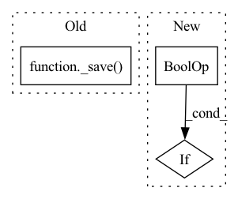

Pattern ID :17882
Before Change
model = RealESRGANUpscaler("realesr-general-x4v3", device)
res = model.forward(bgr_img, 2)
_save( res, "test_upscale_x2.png")
res = model.forward(bgr_img, 4)
_save(res, "test_upscale_x4.png")
After Change
def test_upscale(device):
if device == "cuda" and not torch.cuda.is_available():
return
if device == "mps" and not torch.backends.mps.is_available() :
return
model = RealESRGANUpscaler("realesr-general-x4v3", device)In pattern: SUPERPATTERN
Frequency: 3
Non-data size: 3
Instances Fragment ID: 58589149
Project Name: sanster/lama-cleaner
Commit Name: c4968dd0a96b2e304bf743beaa1917cee68c3aac
Time: 2023-03-28
Author: cwq1913@gmail.com
File Name: lama_cleaner/tests/test_plugins.py
M Class Name: AnonimousClass
N Class Name: AnonimousClass
M Method Name: test_upscale(1)
N Method Name: test_upscale(1)
M Parent Class:
N Parent Class:
M File Name: lama_cleaner/tests/test_plugins.py
N File Name: lama_cleaner/tests/test_plugins.py
M Start Line: 33
M End Line: 37
N Start Line: 31
N End Line: 39
Before Change
if _use_new_zipfile_serialization:
with _open_zipfile_writer(f) as opened_file:
_save( obj, opened_file, pickle_module, pickle_protocol)
return
with _open_file_like(f, "wb") as opened_file:
_legacy_save(obj, opened_file, pickle_module, pickle_protocol)After Change
f_pickle = ""
if isinstance(f, str):
f_pickle = f
elif hasattr(f, "flush") and hasattr(f, "write") :
f_pickle = f.name
fp = tarfile.open(f_pickle + "_", "w") Fragment ID: 58589147
Project Name: allanyiin/trident
Commit Name: bcdf7620a1a14d84309f2b5340cbe3cdd22f286e
Time: 2020-08-30
Author: allan@asiaminer.com.tw
File Name: trident/backend/tensorflow_serialization.py
M Class Name: AnonimousClass
N Class Name: AnonimousClass
M Method Name: save(5)
N Method Name: save(5)
M Parent Class:
N Parent Class:
M File Name: trident/backend/tensorflow_serialization.py
N File Name: trident/backend/tensorflow_serialization.py
M Start Line: 393
M End Line: 398
N Start Line: 393
N End Line: 412
Before Change
return
model = GFPGANPlugin(device)
res = model(rgb_img, None, None)
_save( res, "test_gfpgan.png")
After Change
def test_gfpgan(device):
if device == "cuda" and not torch.cuda.is_available():
return
if device == "mps" and not torch.backends.mps.is_available() :
return
model = GFPGANPlugin(device)
res = model(rgb_img, None, None) Fragment ID: 58589152
Project Name: sanster/lama-cleaner
Commit Name: c4968dd0a96b2e304bf743beaa1917cee68c3aac
Time: 2023-03-28
Author: cwq1913@gmail.com
File Name: lama_cleaner/tests/test_plugins.py
M Class Name: AnonimousClass
N Class Name: AnonimousClass
M Method Name: test_gfpgan(1)
N Method Name: test_gfpgan(1)
M Parent Class:
N Parent Class:
M File Name: lama_cleaner/tests/test_plugins.py
N File Name: lama_cleaner/tests/test_plugins.py
M Start Line: 45
M End Line: 46
N Start Line: 46
N End Line: 50